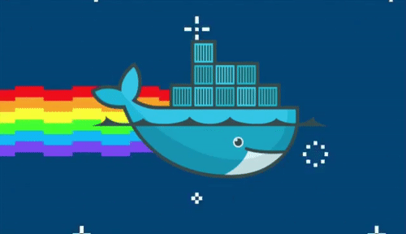
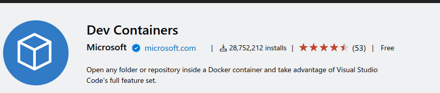

ROS2 from dev to deploy
on nvidia jetson
Agenda
- Dev
- Build and test
- Deploy
- Source control (??)
- Version control

Today
- Dev on linux machine as python project (no ROS)
- Deploy: copy python files to remote system
- Deploy as ZIP
- Deploy: Burn pre cocked jetson image
Docker as a way of life
- Dev: using vscode devcontainer
- Build: using docker to build for different architecture
- Test: using docker as test environment (allow clean system)
- Deploy: Deploy the application as cocked docker image 
Dev
- Using VSCode devcontainer
- support remote development (run on jetson)
- Docker hierarchy
- OS with Chosen ROS version + simulator + common dev tools
- Project runtime dependencies (runtime/test)
- Project dev dependencies (dev)
- Project cycle (forget package and python pip) 
Build
- Cross Compiler
- Using docker as cross compiler environment
- using dev docker that build for the jetson arm architecture

Test
- Using docker as consistent and repetitive environment for testing
- Use it to test package install tests
Deploy - Find your way
- deb packages
- docker image
- jetson image
Deploy - debian package
- Standard
- The linux/debian way
- every package are installable has version and metadata
- easy to deploy from remote
Deploy - jetson image
- pre install jetson image with all project dependencies and code
- Code install as debian package
- easy to copy
Deploy - with docker
- Build application docker with all dependencies
- Easy deploy
Deploy - with docker - when
- legacy
- test's
- mixing system
- when is no other way
Deploy - with docker - why not
- Hardware issue
- Hard to deploy from remote
Version
- Every thing has a version
- package
- OS image
- docker image
- Every project / application has version page
Control after release
- Dev days: yes, we know ourself
- From release and on:
- Source control
- Ticket and issue
- Code review and test
All fit together
- Build Debian packages
- Install Packages on the docker image
- Backup jetson image with docker include
Final thought
Docker for dev using devcontainer Docker for build Docker for test Docker for production